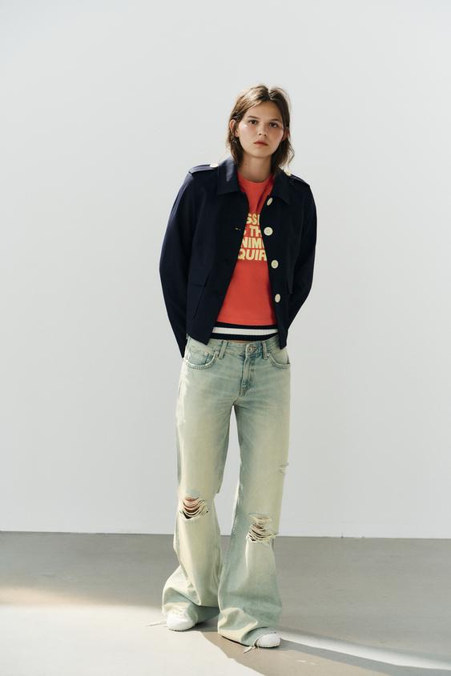
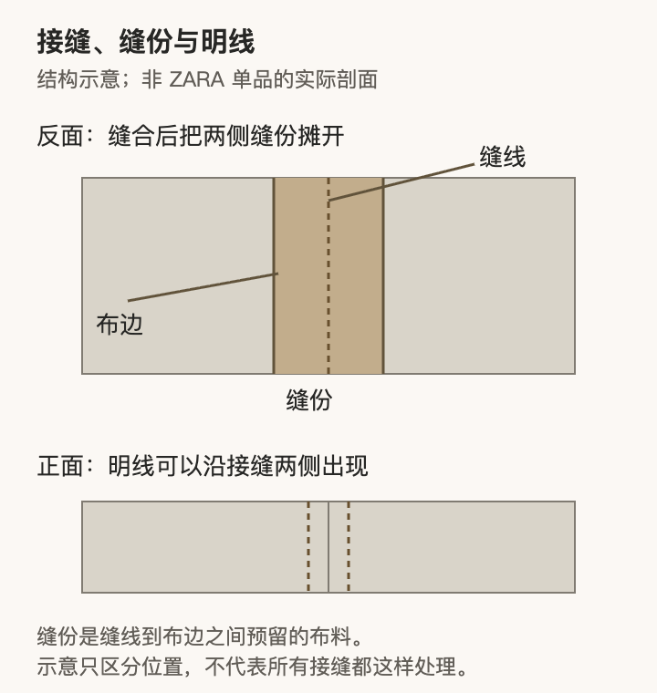
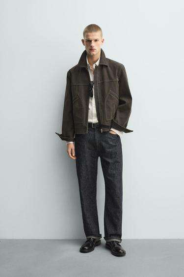
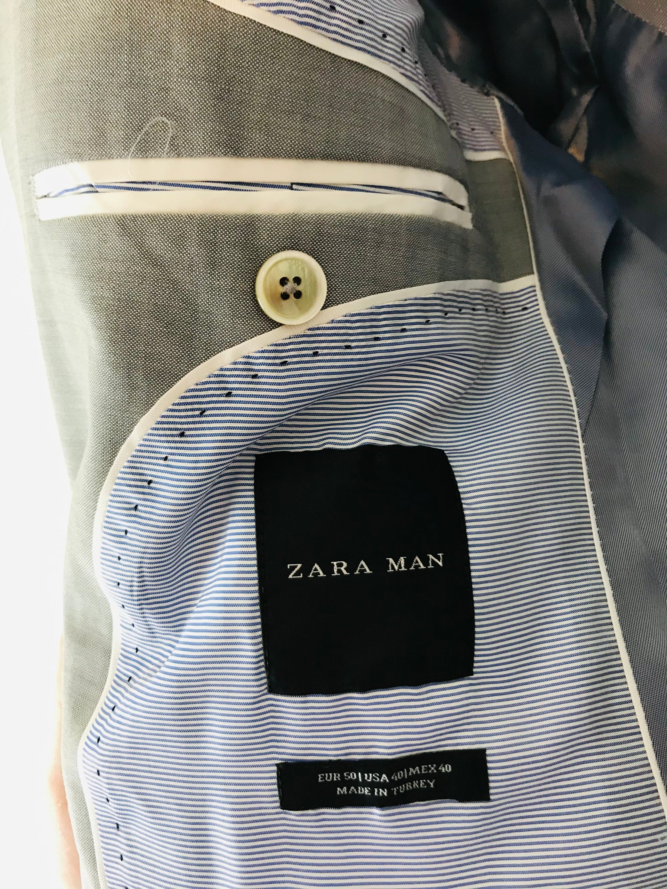
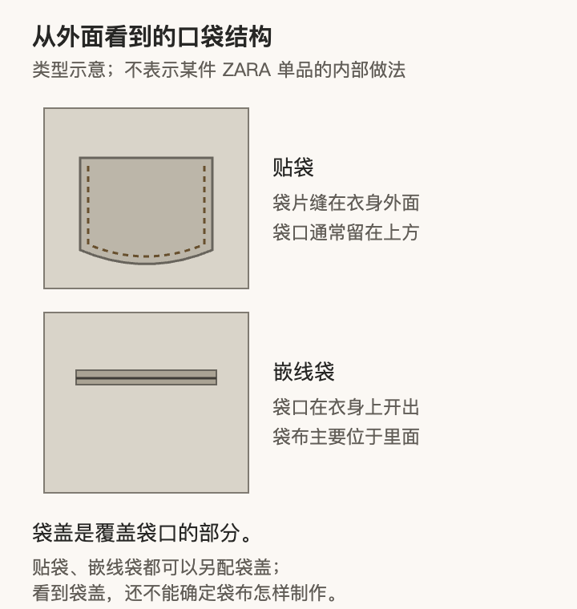

看衣服时，颜色和外形往往最先吸引注意。再靠近一点，值得看的还有：缝线有没有把布面拉皱，纽扣扣上后衣襟是否平顺，口袋是否方便使用，里料会不会牵扯外面的衣身。这些细节影响一件衣服怎样成形，也影响它穿起来是否顺手。
以ZARA的外套为例，同样是接缝、里料、纽扣和口袋，有的被刻意突出，有的藏在里面。理解它们，可以把两件事分开：设计选择决定细节放在哪里、呈现什么形态；制作质量决定这些选择有没有被准确、稳定地完成。本文结合商品图和一张旧款内里实物图，解释怎样观察，而不凭品牌或成分标签给整件衣服打分。
一件衣服的细节，先承担什么任务

图1：深蓝色ZARA短外套：浅色纽扣、肩袢和翻盖口袋共同组织正面。 来源：ZARA官方商品图。
图1这件深蓝外套，官方名称中就提到撞色纽扣和口袋，说明里还列出了肩袢、分割线与同色内里。浅色纽扣沿前襟排列，在肩部也各留一处亮点；两侧的袋盖接近衣身下部，为竖向前襟加上横向形状。它们既是部件，也参与了衣服正面的安排。
把纽扣改成深蓝色，正面的浅色圆点就会减少；把翻盖口袋换成不明显的侧缝袋，下半部的横向边线也会变化。这些替换首先改变设计，并不能直接说明哪一种制作更好。同样，显露接缝不必然是粗糙，隐藏缝线也不自动意味着精细，要看衣服原本怎样安排这些细节。
设计方案最终还要经过纸样、缝制、整烫等环节成为成衣。口袋在纸样上位置正确，缝制时却可能出现偏移；纽扣颜色选得合适，扣上之后也可能因为位置或松量不合适而把衣襟拉开。观察做工，就是继续检查外观安排能否在具体衣服上成立。
接缝：除了针脚齐不齐，还要看布面怎样相接

图2：接缝、缝份与明线的位置示意；非ZARA单品剖面。 本文绘制的通用示意。
接缝是两片或多片布连接的位置，缝线把它们固定在一起。缝线到裁剪布边之间预留的部分叫缝份。衣服正面看到一条连接线，反面往往还有需要摊平、固定或处理布边的部分。接得牢、摊得平和布边不易散开，是不同层面的工作。
明线则是显露在衣服表面的线迹。它可以沿着口袋、衣领、门襟或接缝出现，既可能帮助固定，也可以成为装饰。因此，判断一条线之前，先认清它是在连接衣片，还是在表面压出边线；有的地方会同时承担两种作用。

图3：ZARA撞色明线夹克：横向接缝、口袋边缘与下摆线迹被显露出来。 来源：ZARA官方商品图。
图3的夹克采用撞色明线。胸前有一条横向连接线，两侧口袋的边缘也被线迹勾出来。较深的衣身与较浅的线形成差别，使人容易看到衣片在哪里相接、口袋是什么形状。明线没有被藏起来，而是把制作部位转成了可见的设计内容。
这张全身图可以支持这种位置分析，却不足以数清每一处针距。走近实物时，才适合继续看：线迹是否沿既定边缘稳定延伸，转角是否突然偏离，线旁的布是否出现不需要的波浪。一条线即使没有断，若它把两边布料拉得一边紧、一边松，衣身也可能不能自然放平。
缝线起皱有多种原因，例如缝纫张力过大、上下层布输送不一致，或线与面料在后续处理中的收缩不同。线放松后回缩，可能把布拉拢；两层布以不同速度进入机器，也可能将不一致固定在接缝里。所以，看到线旁有皱褶，可以发现一个值得检查的现象，但不能仅靠它断定是哪道工序出了问题。Coats：接缝起皱的成因
观察时还应把衣服自身的褶皱与缝制问题分开。肘部随动作弯折、袖口被手压住，都可能产生正常折痕。可以先让衣服放松，换一个姿势，再看波浪是否仍然沿同一条缝持续出现。这样比从一张正在活动的照片里寻找“瑕疵”更可靠。
翻到反面，还要看布边怎样处理。容易散开的布边若没有适当保护，日常穿用和清洗后可能逐渐脱散，影响接缝。包缝、包边等方法各有适用情形，不必要求每件衣服使用同一种做法。也不要一律追求更密的针脚：针、线、布和接缝需要配合，增加针数并不能单独保证更平整或更耐用。
对于普通穿着者，先学会识别接缝是否稳定、布面是否受到异常牵拉，已经比记住一个统一的“合格针数”更有帮助。确切强度仍需要测试，不能靠肉眼把使用寿命算出来。
里料：衣服里面也需要留下活动空间

图4：一件旧款ZARA MAN外套的内里细节：条纹里料、灰色布片与内袋开口。 来源：ReThread二手实物照片，并非ZARA现款官方图。
图4不是现款商品广告，而是ReThread刊登的一件旧款ZARA MAN外套的内里实物照片。它提供了外观图很少展示的位置：条纹里料、灰色布片、浅色边条，以及横向内袋开口。这里的“里料”指衣服内侧覆盖层，不根据光泽推定纤维成分。衣服内部并非简单地盖上一块布，开口、接边和附加部件还要彼此衔接。照片反映的是这件旧衣的可见状态，不能据此追溯出厂状态或评价现款系列。
里料是贴近穿着者或内搭的一层布，它可以遮住内部接缝和布边，改善衣服内侧的穿着体验，并配合外层形状。它是否需要、覆盖多少，要结合服装设计考虑。轻薄无里外套与有全里的外套可以各自成立；把衣服翻开，看到没有完整里料，不能立刻认定省掉了必要工序。内布拉斯加大学：外套里料的作用
图4中，内袋的开口位于灰色布片上，条纹里料在相邻位置接入。这让人看到：内袋不能只在外面“看起来有一个口”，还必须在里面为袋布和开口安排位置。衣服内部的分区，有时正是为了安置这些功能。
试穿时，里料是否顺服比它有没有光泽更值得关注。手臂伸进袖子后，可以自然抬手、向前伸手，再坐下。如果外层看起来仍有空间，里面却已经拉紧，可能需要检查里料、版型与尺码的配合；如果里料从袖口或下摆不正常地露出，也需要看内部长度和固定位置。
有些里料会特意留折量，给活动提供余地。例如下摆附近的活动褶，是让内外层在移动时不至于互相牵扯的一种做法。整齐的内部，并不意味着每处都绷得很平、完全没有褶量；需要容纳动作的位置，恰恰可能需要多留一点布。Threads：里料活动褶
还要分清里料与衬布。衬布用于帮助局部保持形态，常涉及领口、门襟等位置；里料主要形成衣服内侧的覆盖层。看到一件外套有光滑内里，只能确认这层内里的外观，不能由此判断里面用了什么衬布、是否采用某种西装工艺。这些是不同部件，承担的任务也不同。
纽扣：位置决定扣合，颜色与大小参与外观
图5：同款深蓝外套的近景：四孔浅色纽扣、横向扣眼、领口与袋盖。 来源：ZARA图片服务器原图；细节图地址经Wardrobe同货号页面取得。
图5与图1是同款外套的近景。浅色纽扣上能看见四个孔，肩袢也由浅色纽扣固定；前襟另一侧是横向扣眼。近景把纽扣与扣眼、衣襟边缘的关系展示出来；这些部件还需要配合布面厚度才能正常开合。
从设计上看，浅色与深蓝形成明显区别，纽扣因此成为前襟的节奏。肩袢上的同类细节又把这种安排延伸到肩部。换成同色小纽扣，会得到另一种外观，但并不能由这个变化判断纽扣缝得更牢或更松。
从使用上看，扣眼要容得下纽扣，又不能宽松到很容易自行滑开；纽扣位置还要使两边衣襟按预期重叠。试穿时可以实际扣合，看前襟是否平顺，再做一次自然转身或伸手。若扣合点周围出现明显放射状拉纹，需要同时考虑尺码、版型、扣位和身体姿势，不能直接把问题都归为缝制不良。
纽扣与衣身之间也需要容纳被扣住的布层。较厚衣服的扣合处，与薄衬衫面对的厚度不同，合适的固定方式应允许纽扣正常穿过扣眼、衣襟自然叠合。检查时不必用力拉扯，只需确认有没有已经松脱的线、纽扣是否明显晃动，以及开合是否勉强。
扣眼边缘则是另一个位置：开口是否修整清楚，线迹是否稳定，有没有严重散开的纤维。它被反复使用，外观整齐和开合顺畅应当一起看。新墨西哥州立大学的服装制作标准，也分别检查纽扣的固定、位置，以及扣眼的尺寸与完成状态。服装制作标准
照片能让我们看见图5的纽扣形态和扣眼方向，实际牢固程度与开合手感需要摸到衣服才能确认。由浅色圆扣联想到贝壳或某种天然材料也很容易，但可以查成分或辅料说明，再确认原料，不能从颜色直接命名。
口袋：袋盖、袋口与袋布，是三个不同位置

图6：贴袋、嵌线袋和袋盖的关系；并非某件ZARA单品的内部做法。 本文绘制的通用示意。
口袋值得先分清几个名称。贴袋是将袋片缝在衣身外面，袋片轮廓通常可以看见；嵌线袋是在衣身上开出袋口，开口边缘由窄条布等结构整理，袋布主要位于里面。袋盖则覆盖在袋口上方，可以与不同口袋结构组合。只看到一片袋盖，不能就把下面的袋子叫作贴袋。
回到图5，最清楚的是两侧袋盖和周围分割线。袋盖在门襟两侧形成横向边缘，位置又接近腰下，使衣服下半部出现两个相互对应的局部。官方说明确认有翻盖口袋，但并未提供足以判断袋布内部完成情况的照片，因此适合分析袋盖位置，内部结构则留给实物确认。
图3的夹克不同，外置袋片与明线一起呈现，口袋边缘成为衣身上较明显的形状。口袋若放得更高、更低，或开口换一个方向，手伸入的路径和衣身的外观都会变化。这是口袋同时承担设计与使用任务的具体表现。
判断口袋做工，可以先看没有装东西时是否自然贴合，再轻放入准备随身携带的小件，观察袋口是否容易操作、物品是否明显顶起衣身。口袋的存在不等于适合放任何物品：很薄的外套即使有袋，也可能不适合长时间承受沉重物件。
袋口两端是反复伸手时会受力的位置，值得看固定是否稳妥；贴袋的上角尤其容易在动作中受到牵扯。左右口袋若原本作成一对，还可以比较位置、形状和大小。有意的不对称应从设计上理解，意外的偏移才是另一个问题。
袋口若暂时无法打开，应先查商品说明或请店员确认。有的开口可能有临时封线，也有只作装饰的安排；不能看到一道线就自行剪开。照片可以帮助识别外形，实际收纳空间仍要亲手确认。
格纹与条纹：先找接续关系，再判断有没有错位
图7：ZARA深蓝格纹西装的穿着图；姿势、阴影和取景会影响细节的可见程度。 来源：ZARA官方商品图。
图7的官方名称是格纹西装，但整张穿着图里，深色布面、光线与人物动作共同影响图案的可见程度。人物一只手放入口袋，另一侧又被包遮住部分衣身。这样的图适合看整套衣服的外形，不能替代前襟、侧缝和口袋的近距离检查。
看图案时，可以从一条容易辨认的横线开始，追踪它经过左前片、前襟和右前片时怎样延续。再看口袋的图案与周围衣身，是接着走，还是另设了方向。与其笼统地问“有没有对花”，不如指出自己在看哪一处的哪条线。
假设一件外套正面有横向格纹，左右前片希望形成连续关系，错开一截就会打断这条横线。若设计把口袋裁成斜向格纹，则可能是在主动突出这个口袋；此时要求它继续沿衣身横线排列，反而忽略了设计本身。
曲面和形状也会限制接续。袖子、胸腰转折或经过收量的位置，不能都当作一块没有变化的平面，要求每条线在所有方向完全相接。较合理的观察，是先找主要可见位置的安排是否一致，再看其他部位的变化是否符合衣片的形状与设计，而不是把“全身每处对齐”当作唯一标准。
对齐需要在排料、裁剪和缝制时彼此配合，属于制作安排的一部分。不过，单独一个对齐得很好的口袋，也不能证明纽扣、里料、接缝全部合格。每个细节提供的证据，都只回答与它有关的问题。
到实物面前，可以按怎样的顺序看
商品图先帮助辨认设计；拿到实物后，适合从外到内、从静止到活动继续观察。无须把一件日常衣服检查成实验室样品，下面几处已经能够形成较清楚的判断。
| 观察顺序 | 看什么 | 发现问题后再确认什么 |
|---|---|---|
| 自然垂放 | 衣襟、下摆、口袋是否符合预期形状 | 是设计不对称、摆放影响，还是制作偏移 |
| 靠近接缝 | 跳针、开线、持续的波浪与布边处理 | 衣服放松后是否仍在同一处出现 |
| 实际扣合 | 纽扣和扣眼能否顺畅配合 | 拉纹是否与尺码、姿势或扣位有关 |
| 翻看内部 | 里料、内袋和接边有没有异常牵扯 | 是否有正常活动褶，是否存在松脱或不当外露 |
| 抬手、坐下、伸手取物 | 细节能否配合日常动作 | 外观喜欢，但功能是否适合自己的使用方式 |
最后再把观察到的现象分开记录。“不喜欢这组浅色纽扣”是审美偏好；“纽扣已经松脱”是明确的状态；“怀疑整件衣服不耐穿”则还需要更多依据。说清具体哪里不合适，既有利于选择，也方便向店员或修改师说明问题。
面料成分是理解衣服的一部分，接缝和部件如何配合，决定了原料被做成了怎样的成衣。通过这些ZARA案例，可以逐步把注意力从“整体看着不错”推进到更具体的认识：哪里在塑造外观，哪里承担使用任务，以及这些任务有没有被妥善完成。
图片与资料
商品名称与结构说明核对于2026年11月。图1、3、5、7来自ZARA图片服务器；图5细节图地址由Wardrobe同货号页面提供，商品身份与描述回到官方页面核对。图4来自图注所列ReThread实物页面，图2、6为本文绘制的通用示意。照片版权归原权利人，均保留原比例，不以来源署名宣称获得独占授权。
基础工艺参照新墨西哥州立大学服装制作标准、佐治亚大学服装质量与选择资料、Coats接缝技术说明、内布拉斯加大学外套里料说明与Threads里料活动褶教程。本文未购买或拆解这些单品，也没有进行洗涤、接缝强度或耐穿测试。
留言
由 Disqus 提供。